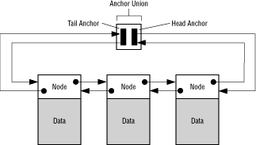

Like all linked lists, Portfolio lists are dynamic; they can expand and contract as needed. Their contents, known as nodes, are ordered (there is a first node, a second node, and so on), and you can add a new node at any position in a list. The following sections explain how Portfolio lists are different from other linked lists.
 Figure 1: Anchored list.
When a task traverses a Portfolio list, it determines whether it's at the beginning or end of the list by testing to see if the subsequent node is an anchor.
As the previous illustration shows, Portfolio lists are doubly linked: Each node contains two pointers, one to point to the following node or anchor and one to the previous node or anchor. As a result, back-to-front list traversals are as efficient as front-to-back traversals.
FindNamedNode() call to find a node by name. To create a list component, you define a data structure whose first field is a node. An example is the NoteTracker structure defined in the music library:
Example 1: The Note Tracker structure in the music library.
To pass such a component to one of the many list-manipulation functions that takes a Node structure as an argument, you simply cast the argument to type Node. Here's an example:
typedef struct NoteTracker
{
Node nttr_Node;
int8 nttr_Note;
int8 nttr_MixerChannel;
uint8 nttr_Flags;
int8 nttr_Channel; /* MIDI */
Item nttr_Instrument;
} NoteTracker;
AddTail( &DSPPData.dspp_ExternalList, (Node *) dext );n_Priority field of the Node structure). When you use a list, you have the option of keeping its nodes sorted by priority (done automatically by the kernel if you use InsertNodeFromHead() or InsertNodeFromTail()), or you can specify other ways to arrange the contents (by using the UniversalInsertNode() function). You can also change the priority of a node in a list with the SetNodePri() function, whereupon the kernel automatically repositions the node in the list to reflect its new priority value.A node can be in only one list at a time.